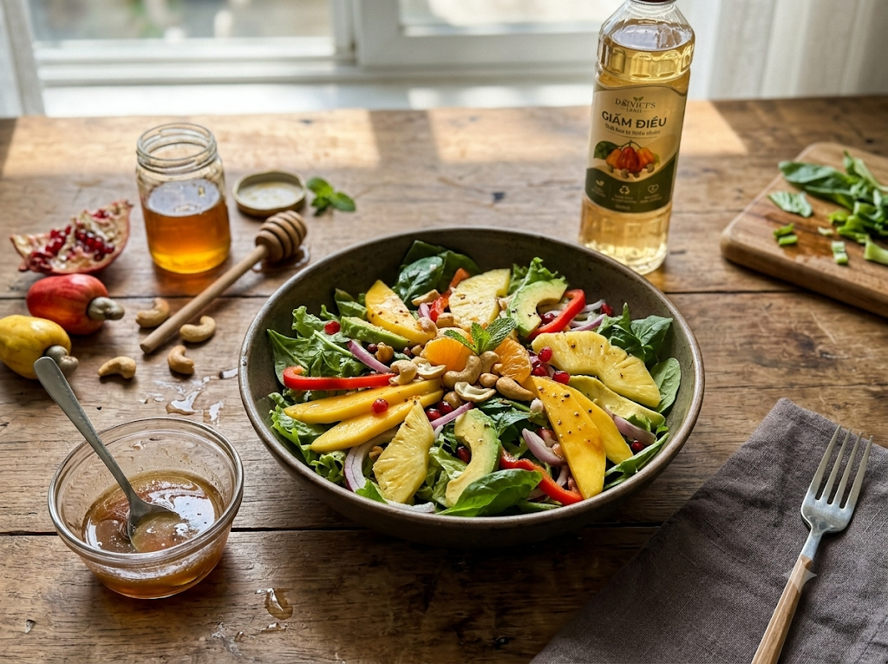
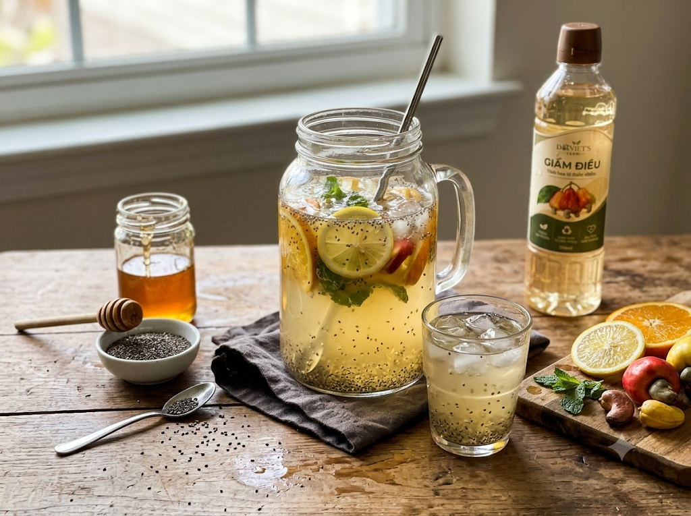
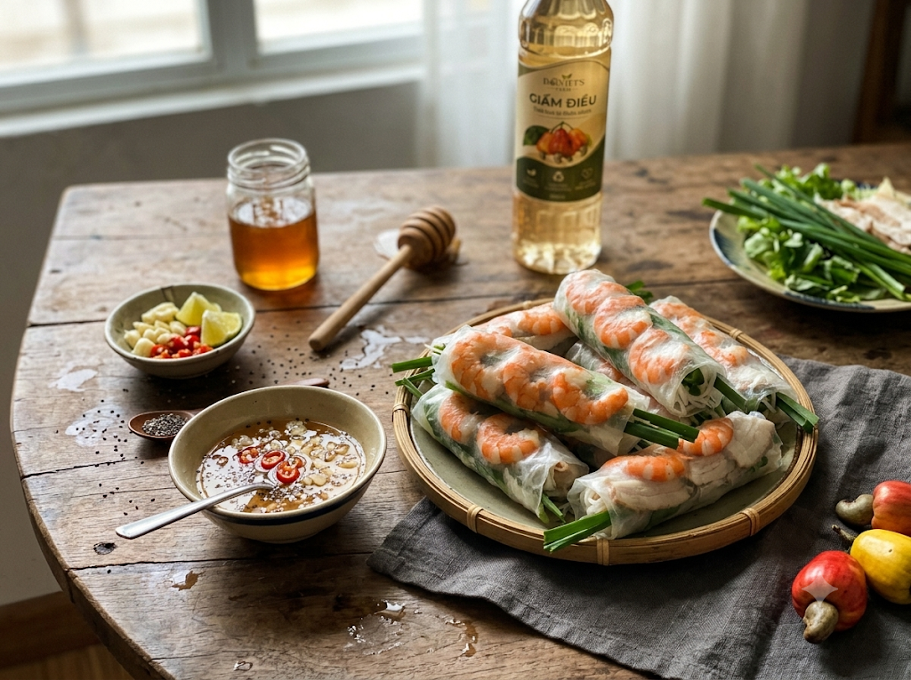
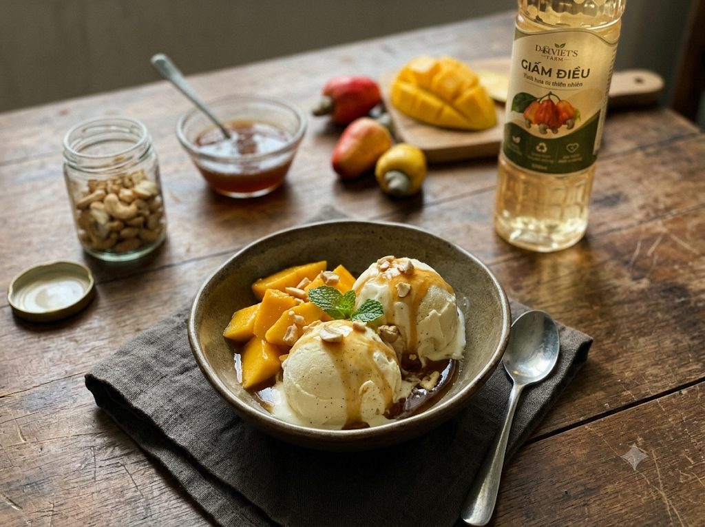
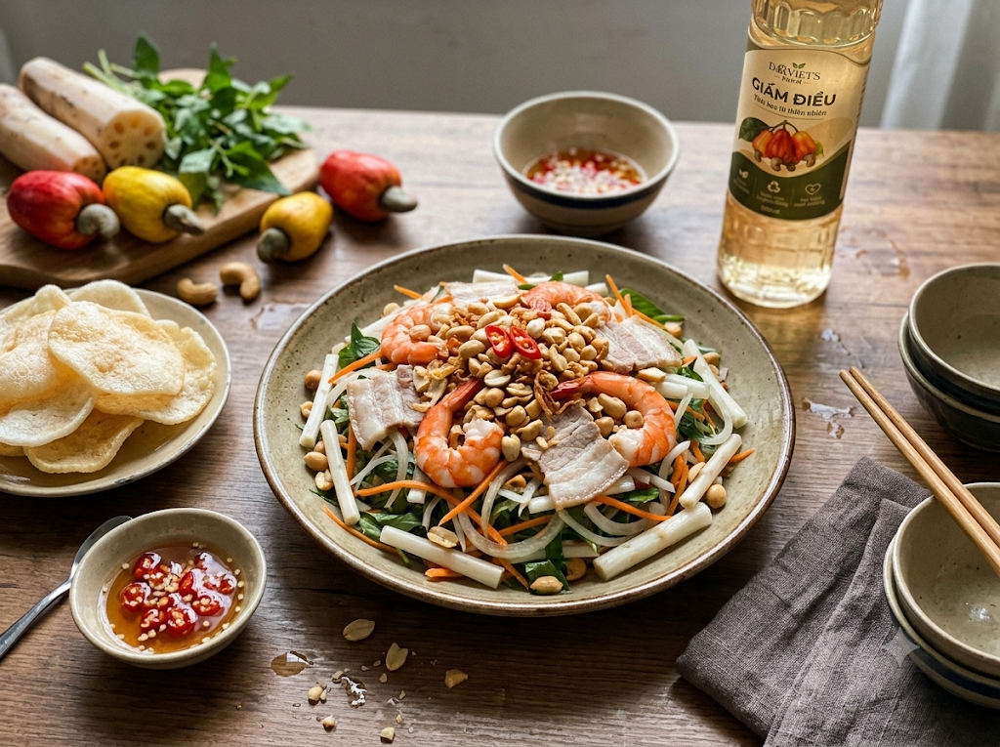
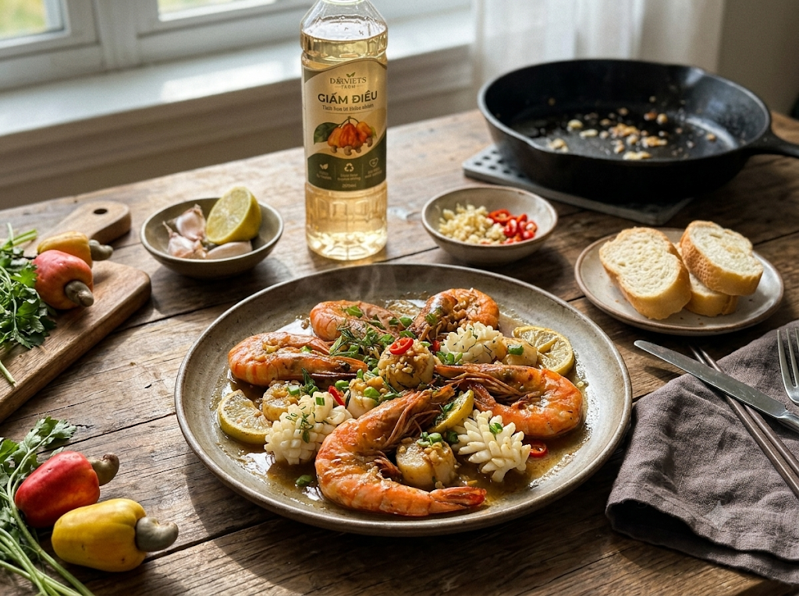

Salad & Eat CleanSalad Nhiệt Đới Sốt Giấm Điều Mật Ong
Xoài chín, dứa thơm, bơ sáp và rau mầm tươi mát hòa quyện sốt giấm điều mật ong chua thanh, rắc hạt điều rang bùi thơm nức.
Không chỉ là gia vị bếp, Giấm Điều là bí quyết chăm sóc sức khỏe đường ruột, thức uống detox mỗi sáng và nguồn cảm hứng sáng tạo cho bàn ăn gia đình.
Được kiểm chứng từ nguồn dưỡng chất dồi dào của thịt quả điều tươi kết hợp cùng hệ vi sinh men sống.
Hệ enzyme và men sống tự nhiên giúp cân bằng hệ vi khuẩn đường ruột, hỗ trợ tiêu hóa thức ăn nhiều dầu mỡ và giảm đầy hơi khó tiêu.
Thịt quả điều chứa lượng Vitamin C gấp 5 lần quả cam cùng hợp chất Polyphenol chống oxy hóa mạnh mẽ, nâng cao sức đề kháng tự nhiên.
Axit axetic tự nhiên làm chậm quá trình hấp thu tinh bột, giúp ổn định đường huyết sau bữa ăn và hỗ trợ trao đổi chất lành mạnh.
Vị chua thanh nhẹ làm mềm thịt, khử tanh hải sản, chống thâm ngó sen; thậm chí dùng làm chất định màu tự nhiên cho vải dệt hữu cơ.
Bộ sưu tập 6 món ăn sáng tạo sử dụng Giấm Điều Hữu Cơ DATVIET'S FARM

Salad & Eat CleanXoài chín, dứa thơm, bơ sáp và rau mầm tươi mát hòa quyện sốt giấm điều mật ong chua thanh, rắc hạt điều rang bùi thơm nức.

Detox 14 ngàyThức uống thanh lọc mỗi sáng: vị chua dịu nhẹ thơm trái điều, mát lành với hạt chia ngâm nở, chanh tươi và lá bạc hà.

Nước chấm HealthyThay hoàn toàn giấm hóa học bằng Giấm Điều giúp chén nước chấm tỏi ớt thơm dịu, ngọt hậu sâu và êm dịu dạ dày.

Sáng tạo vị giácSự kết hợp bất ngờ chuẩn Fine-dining: kem vani ngọt béo bùng nổ khi rưới lớp sốt caramel Giấm Điều chua thanh và xoài chín.

Món Việt truyền thốngNgâm ngó sen trong Giấm Điều pha loãng giúp ngó sen trắng muốt và giòn tan suốt nhiều giờ, vị chua thanh không hắc.

Món mặn F&BGiấm Điều cho vào chảo bơ tỏi cuối công đoạn giúp khử sạch mùi tanh hải sản, cân bằng độ béo và dậy mùi thơm tinh tế.